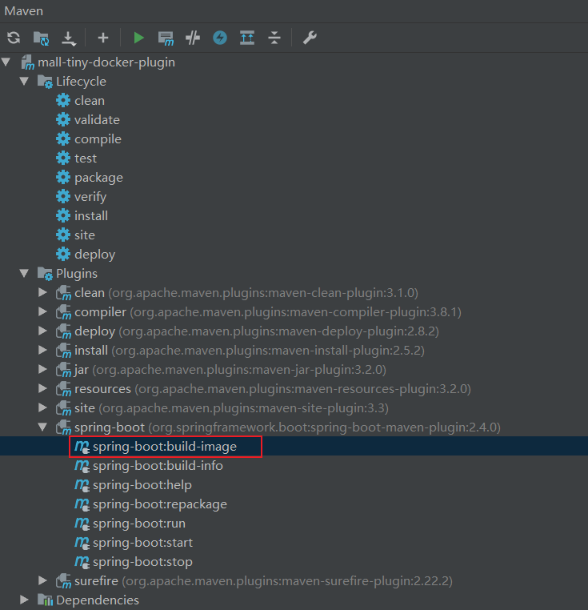
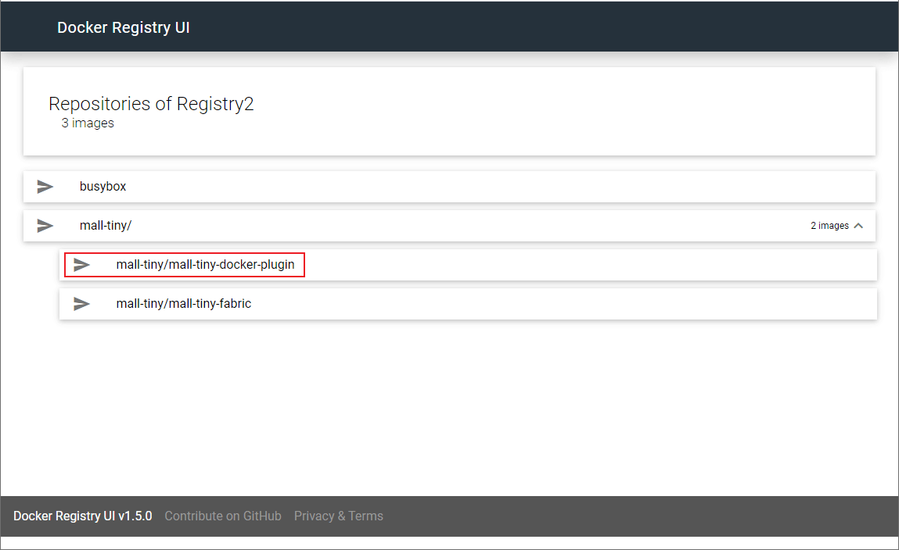
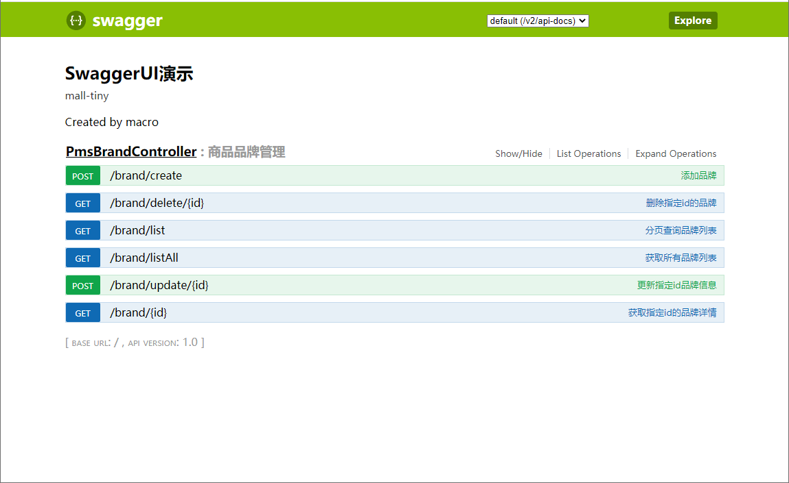

学习不走弯路，关注公众号 回复「学习路线」，获取mall项目专属学习路线！
还在使用第三方Docker插件？SpringBoot官方插件真香！
为了方便为SpringBoot应用构建Docker镜像，我们经常会使用Maven插件来打包镜像。之前一直使用的是第三方插件，有
spotify和fabric8出品的两种docker-maven-plugin。最近SpringBoot 2.4.0发布了，官方插件也增加了对Docker的支持，体验了一把发现也很好用，推荐给大家！
第三方插件使用
我们先了解下第三方插件的使用，方便和官方插件做对比，
fabric8插件使用具体可以参考《还在手动部署SpringBoot应用？试试这个自动化插件！》。
- 值得注意的是，在我们使用插件时，需要自己定义镜像构建过程，比如在
pom.xml中使用如下配置，<images>标签下的配置为镜像构建过程的配置；
<build>
<plugins>
<plugin>
<groupId>io.fabric8</groupId>
<artifactId>docker-maven-plugin</artifactId>
<version>0.33.0</version>
<configuration>
<!-- Docker 远程管理地址-->
<dockerHost>http://192.168.3.101:2375</dockerHost>
<!-- Docker 推送镜像仓库地址-->
<pushRegistry>http://192.168.3.101:5000</pushRegistry>
<images>
<image>
<!--由于推送到私有镜像仓库，镜像名需要添加仓库地址-->
<name>192.168.3.101:5000/mall-tiny/${project.name}:${project.version}</name>
<!--定义镜像构建行为-->
<build>
<!--定义基础镜像-->
<from>java:8</from>
<args>
<JAR_FILE>${project.build.finalName}.jar</JAR_FILE>
</args>
<!--定义哪些文件拷贝到容器中-->
<assembly>
<!--定义拷贝到容器的目录-->
<targetDir>/</targetDir>
<!--只拷贝生成的jar包-->
<descriptorRef>artifact</descriptorRef>
</assembly>
<!--定义容器启动命令-->
<entryPoint>["java", "-jar","/${project.build.finalName}.jar"]</entryPoint>
<!--定义维护者-->
<maintainer>macrozheng</maintainer>
</build>
</image>
</images>
</configuration>
</plugin>
</plugins>
</build>
- 或者先在Dockerfile文件中定义好镜像构建过程；
# 该镜像需要依赖的基础镜像
FROM java:8
# 将当前maven目录生成的文件复制到docker容器的/目录下
COPY maven /
# 声明服务运行在8080端口
EXPOSE 8080
# 指定docker容器启动时运行jar包
ENTRYPOINT ["java", "-jar","/mall-tiny-fabric-0.0.1-SNAPSHOT.jar"]
# 指定维护者的名字
MAINTAINER macrozheng
- 然后在插件中引用Dockerfile文件，用于构建镜像；
<build>
<dockerFileDir>${project.basedir}</dockerFileDir>
</build>
- 其实对于SpringBoot应用来说，如何从应用Jar包构建Docker镜像，做法基本是差不多的，为什么非要自己定义镜像的构建过程呢？
官方插件使用
SpringBoot官方插件解决了上面的问题，无需自己编写Docker镜像构建过程，直接自动构建，是不是很方便！接下来我们来体验下它的强大之处！
- 由于我们需要把镜像推送到镜像仓库，首先我们安装好私有镜像仓库
Registry和可视化镜像管理工具docker-registry-ui，具体可以参考《还在手动部署SpringBoot应用？试试这个自动化插件！》；
[root@linux-local ~]# docker ps
CONTAINER ID IMAGE COMMAND CREATED STATUS PORTS NAMES
9ffec08467ac joxit/docker-registry-ui:static "/bin/sh -c entrypoi…" 2 hours ago Up 2 hours 0.0.0.0:8280->80/tcp registry-ui
a809535ee2a2 registry:2 "/entrypoint.sh /etc…" 3 months ago Up 7 hours 0.0.0.0:5000->5000/tcp registry2
- 然后我们需要把应用的版本升级到SpringBoot 2.4.0，之前的版本Docker支持没有这个完善；
<parent>
<groupId>org.springframework.boot</groupId>
<artifactId>spring-boot-starter-parent</artifactId>
<version>2.4.0</version>
<relativePath/> <!-- lookup parent from repository -->
</parent>
- 然后修改
pom.xml文件，对官方Maven插件进行配置，主要是对Docker相关功能进行配置；
<plugin>
<groupId>org.springframework.boot</groupId>
<artifactId>spring-boot-maven-plugin</artifactId>
<configuration>
<image>
<!--配置镜像名称-->
<name>192.168.3.101:5000/mall-tiny/${project.name}:${project.version}</name>
<!--镜像打包完成后自动推送到镜像仓库-->
<publish>true</publish>
</image>
<docker>
<!--Docker远程管理地址-->
<host>http://192.168.3.101:2375</host>
<!--不使用TLS访问-->
<tlsVerify>false</tlsVerify>
<!--Docker推送镜像仓库配置-->
<publishRegistry>
<!--推送镜像仓库用户名-->
<username>test</username>
<!--推送镜像仓库密码-->
<password>test</password>
<!--推送镜像仓库地址-->
<url>http://192.168.3.101:5000</url>
</publishRegistry>
</docker>
</configuration>
</plugin>
- 如果你使用的是IDEA的话，直接双击SpringBoot插件的
build-image命令即可一键打包并推送到镜像仓库；

- 也可以在命令行使用如下Maven命令来打包构建镜像；
mvn spring-boot:build-image
- 镜像构建过程中会输出如下信息，由于很多依赖会从Github上下载，网络不好的情况下会下载失败，多试几次就好：
[INFO] > Pulling builder image 'docker.io/paketobuildpacks/builder:base' 100%
[INFO] > Pulled builder image 'paketobuildpacks/builder@sha256:9d377230ba8ee74d8619178fd318b1b87a7da1a88bdb198afd14dd7de9e8ea6a'
[INFO] > Pulling run image 'docker.io/paketobuildpacks/run:base-cnb' 100%
[INFO] > Pulled run image 'paketobuildpacks/run@sha256:33d37fc9ba16e220f071805eaeed881a508ceee5c8909db5710aaed7e97e4fc2'
[INFO] > Executing lifecycle version v0.9.3
[INFO] > Using build cache volume 'pack-cache-5641f846df6.build'
[INFO]
[INFO] > Running creator
[INFO] [creator] ===> DETECTING
[INFO] [creator] 5 of 18 buildpacks participating
[INFO] [creator] paketo-buildpacks/ca-certificates 1.0.1
[INFO] [creator] paketo-buildpacks/bellsoft-liberica 5.2.1
[INFO] [creator] paketo-buildpacks/executable-jar 3.1.3
[INFO] [creator] paketo-buildpacks/dist-zip 2.2.2
[INFO] [creator] paketo-buildpacks/spring-boot 3.5.0
[INFO] [creator] ===> ANALYZING
[INFO] [creator] Restoring metadata for "paketo-buildpacks/ca-certificates:helper" from app image
[INFO] [creator] Restoring metadata for "paketo-buildpacks/bellsoft-liberica:helper" from app image
[INFO] [creator] Restoring metadata for "paketo-buildpacks/bellsoft-liberica:java-security-properties" from app image
[INFO] [creator] Restoring metadata for "paketo-buildpacks/bellsoft-liberica:jre" from app image
[INFO] [creator] Restoring metadata for "paketo-buildpacks/bellsoft-liberica:jvmkill" from app image
[INFO] [creator] Restoring metadata for "paketo-buildpacks/executable-jar:class-path" from app image
[INFO] [creator] Restoring metadata for "paketo-buildpacks/spring-boot:helper" from app image
[INFO] [creator] Restoring metadata for "paketo-buildpacks/spring-boot:spring-cloud-bindings" from app image
[INFO] [creator] Restoring metadata for "paketo-buildpacks/spring-boot:web-application-type" from app image
[INFO] [creator] ===> RESTORING
[INFO] [creator] ===> BUILDING
[INFO] [creator]
[INFO] [creator] Paketo CA Certificates Buildpack 1.0.1
[INFO] [creator] https://github.com/paketo-buildpacks/ca-certificates
[INFO] [creator] Launch Helper: Reusing cached layer
[INFO] [creator]
[INFO] [creator] Paketo BellSoft Liberica Buildpack 5.2.1
[INFO] [creator] https://github.com/paketo-buildpacks/bellsoft-liberica
[INFO] [creator] Build Configuration:
[INFO] [creator] $BP_JVM_VERSION 8.* the Java version
[INFO] [creator] Launch Configuration:
[INFO] [creator] $BPL_JVM_HEAD_ROOM 0 the headroom in memory calculation
[INFO] [creator] $BPL_JVM_LOADED_CLASS_COUNT 35% of classes the number of loaded classes in memory calculation
[INFO] [creator] $BPL_JVM_THREAD_COUNT 250 the number of threads in memory calculation
[INFO] [creator] $JAVA_TOOL_OPTIONS the JVM launch flags
[INFO] [creator] BellSoft Liberica JRE 8.0.275: Reusing cached layer
[INFO] [creator] Launch Helper: Reusing cached layer
[INFO] [creator] JVMKill Agent 1.16.0: Reusing cached layer
[INFO] [creator] Java Security Properties: Reusing cached layer
[INFO] [creator]
[INFO] [creator] Paketo Executable JAR Buildpack 3.1.3
[INFO] [creator] https://github.com/paketo-buildpacks/executable-jar
[INFO] [creator] Process types:
[INFO] [creator] executable-jar: java org.springframework.boot.loader.JarLauncher
[INFO] [creator] task: java org.springframework.boot.loader.JarLauncher
[INFO] [creator] web: java org.springframework.boot.loader.JarLauncher
[INFO] [creator]
[INFO] [creator] Paketo Spring Boot Buildpack 3.5.0
[INFO] [creator] https://github.com/paketo-buildpacks/spring-boot
[INFO] [creator] Creating slices from layers index
[INFO] [creator] dependencies
[INFO] [creator] spring-boot-loader
[INFO] [creator] snapshot-dependencies
[INFO] [creator] application
[INFO] [creator] Launch Helper: Reusing cached layer
[INFO] [creator] Web Application Type: Contributing to layer
[INFO] [creator] Servlet web application detected
[INFO] [creator] Writing env.launch/BPL_JVM_THREAD_COUNT.default
[INFO] [creator] Spring Cloud Bindings 1.7.0: Reusing cached layer
[INFO] [creator] 4 application slices
[INFO] [creator] Image labels:
[INFO] [creator] org.opencontainers.image.title
[INFO] [creator] org.opencontainers.image.version
[INFO] [creator] org.springframework.boot.spring-configuration-metadata.json
[INFO] [creator] org.springframework.boot.version
[INFO] [creator] ===> EXPORTING
[INFO] [creator] Reusing layer 'paketo-buildpacks/ca-certificates:helper'
[INFO] [creator] Reusing layer 'paketo-buildpacks/bellsoft-liberica:helper'
[INFO] [creator] Reusing layer 'paketo-buildpacks/bellsoft-liberica:java-security-properties'
[INFO] [creator] Reusing layer 'paketo-buildpacks/bellsoft-liberica:jre'
[INFO] [creator] Reusing layer 'paketo-buildpacks/bellsoft-liberica:jvmkill'
[INFO] [creator] Reusing layer 'paketo-buildpacks/executable-jar:class-path'
[INFO] [creator] Reusing layer 'paketo-buildpacks/spring-boot:helper'
[INFO] [creator] Reusing layer 'paketo-buildpacks/spring-boot:spring-cloud-bindings'
[INFO] [creator] Reusing layer 'paketo-buildpacks/spring-boot:web-application-type'
[INFO] [creator] Reusing 4/5 app layer(s)
[INFO] [creator] Adding 1/5 app layer(s)
[INFO] [creator] Reusing layer 'launcher'
[INFO] [creator] Reusing layer 'config'
[INFO] [creator] Reusing layer 'process-types'
[INFO] [creator] Adding label 'io.buildpacks.lifecycle.metadata'
[INFO] [creator] Adding label 'io.buildpacks.build.metadata'
[INFO] [creator] Adding label 'io.buildpacks.project.metadata'
[INFO] [creator] Adding label 'org.opencontainers.image.title'
[INFO] [creator] Adding label 'org.opencontainers.image.version'
[INFO] [creator] Adding label 'org.springframework.boot.spring-configuration-metadata.json'
[INFO] [creator] Adding label 'org.springframework.boot.version'
[INFO] [creator] Setting default process type 'web'
[INFO] [creator] *** Images (d5e1771dac7b):
[INFO] [creator] 192.168.3.101:5000/mall-tiny/mall-tiny-docker-plugin:0.0.1-SNAPSHOT
[INFO]
[INFO] Successfully built image '192.168.3.101:5000/mall-tiny/mall-tiny-docker-plugin:0.0.1-SNAPSHOT'
[INFO]
[INFO] > Pushed image '192.168.3.101:5000/mall-tiny/mall-tiny-docker-plugin:0.0.1-SNAPSHOT'
[INFO] ------------------------------------------------------------------------
[INFO] BUILD SUCCESS
[INFO] ------------------------------------------------------------------------
[INFO] Total time: 01:06 min
[INFO] Finished at: 2020-11-27T15:07:46+08:00
[INFO] Final Memory: 37M/359M
[INFO] ------------------------------------------------------------------------
- 镜像构建成功后，可以从镜像仓库查看到我们的镜像：
[root@linux-local ~]# docker images
REPOSITORY TAG IMAGE ID CREATED SIZE
paketobuildpacks/run base-cnb a717358311fc 9 days ago 87.2MB
java 8 d23bdf5b1b1b 3 years ago 643MB
192.168.3.101:5000/mall-tiny/mall-tiny-docker-plugin 0.0.1-SNAPSHOT d5e1771dac7b 40 years ago 244MB
pack.local/builder/fewqajyqsc latest f15fad05a5ba 40 years ago 558MB
pack.local/builder/kirivtcqtu latest f15fad05a5ba 40 years ago 558MB
paketobuildpacks/builder base 511452064e06 40 years ago 558MB
- 我们可以从
Docker Registry UI中查看镜像仓库中的镜像，访问地址：http://192.168.3.101:8280/

- 接着使用如下命令启动我们的SpringBoot应用：
docker run -p 8080:8080 --name mall-tiny-docker-plugin \
--link mysql:db \
-v /etc/localtime:/etc/localtime \
-v /mydata/app/mall-tiny-docker-plugin/logs:/var/logs \
-d 192.168.3.101:5000/mall-tiny/mall-tiny-docker-plugin:0.0.1-SNAPSHOT
- 启动成功后，可以成功访问到SpringBoot应用的Swagger页面，访问地址：http://192.168.3.101:8080/swagger-ui.html

总结
SpringBoot官方Maven插件避免了编写Docker镜像构建过程，同时充分利用了SpringBoot 2.3以后的Jar分层技术，但对于需要自定义构建镜像的场景造成了一定的麻烦。
参考资料
官方文档：https://docs.spring.io/spring-boot/docs/2.4.0/maven-plugin/reference/htmlsingle/#build-image
项目源码地址
https://github.com/macrozheng/mall-learning/tree/master/mall-tiny-docker-plugin
公众号